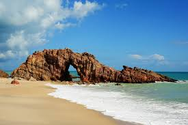

Com o nascer do sol, as opções do que fazer em Jeri nascem também. As maiores atrações são para ser vistas durante o dia; por isso, se você tem pouco tempo, vale a pena acordar cedo para aproveitar bem o dia. Grande parte das pessoas que querem curtir o mar, vão para a praia de Jeri, a mais próxima da vila. A tranquilidade está ali, e pegar um pouco de sol depois de um mergulho no mar é rejuvenescedor. Alguns restaurantes têm cadeiras e sombreiros que facilitam a vida de quem não quer se preocupar com muita coisa. Para quem quer praticar ou aprender kitesurf, esse o point da região. Para apreciar uma água mais cristalina, talvez você prefira curtir as lagoas e não o mar. As atrações naturais de Jeri ficam, em boa parte, afastadas da vila. No litoral oeste as atrações são o Mangue Seco, o passeio para ver cavalos marinhos, trajeto pela área de dunas e a Lagoa da Tatajuba, que tem restaurantes. Já no lado leste, local mais popular da região, as maiores atrações são a Lagoa Azul, a linda Lagoa do Paraíso, onde fica o clube de praia Alchymist e a Pedra Furada. As agências, buggueiros e motoristas de Jericoacoara oferecem passeios para o lado leste e para o lado oeste, que podem ser feitos em buggy ou veículos tracionados, de forma particular ou compartilhado - tudo depende de como você gostaria de realizar a atividade. Os passeios geralmente são feitos com saída de manhã cedo e retorno por volta das 15h e passam por diferentes atrações da região. Se você quiser ir apenas para um local específico, como por exemplo passar o dia curtindo a Lagoa do Paraíso, também poderá fazer isso, basta combinar com um motorista. O pôr do sol é sempre uma atração em Jeri e se você puder, admire-o todos os dias de sua viagem, cada dia de um lugar diferente. Você pode acompanhar o sol se pondo na Praia de Jeri, na linda Duna do Pôr do Sol, que tem um visual maravilhoso. .